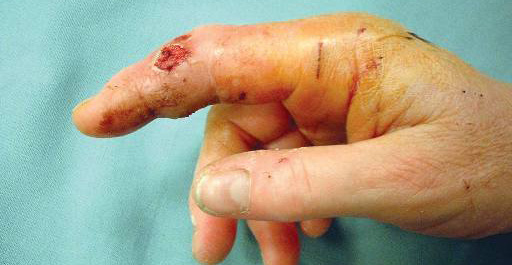

Kondisyon
Mòde Bèt ak Moun
Mòde nan men an ki sòti nan chat, chen, ak moun se ti blese men yo gen yon gwo risk enfeksyon pwofon e yo bezwen atansyon rapid.

Illustration © American Society for Surgery of the Hand
Kisa blesi mòde nan men an ye?
Mòde nan men an sanble piti men yo ka lakòz enfeksyon grav. Dan chat tankou zegwi epi yo pouse mikwòb fon andedan anvlòp tandon ak jwenti yo. Mòde chen souvan kreye blesi kraze ak chire ansanm ak kontaminasyon. Mòde moun, ki gen ladan yon blese ki soti lè yo frape yon moun nan bouch (yon "mòde goumen") sou jwenti dwèt la, ka pouse mikwòb bouch yo dirèkteman nan yon jwenti. Paske men an gen anpil ti espas fèmen, enfeksyon ka gaye vit epi lakòz pwoblèm ki dire lontan si yo pa trete l bonè.
Sentòm komen
- Youn oswa plizyè pikòt, grate, oswa chire sou men an oswa dwèt la
- Doulè, anflamasyon, wouj, oswa chalè nan kèk èdtan jouk yon jou
- Likid twoub oswa pi k ap koule nan yon blese
- Doulè lè w pliye dwèt la dousman, sa ka siyale yon enfeksyon anvlòp tandon
- Yon ti blese sou jwenti dwèt la apre yon goumen, sa se yon risk trè wo
- Lafyèv oswa frison
Poukisa sa rive?
- Mòde chat. Pikòt ki sanble piti, sitou nan men oswa ponyèt, se yo ki pi twonpe ou sou danje. Anviwon mwatye mòde chat nan men an devlope yon enfeksyon.
- Mòde chen. Ka lakòz gwo chire, blesi kraze, ak pèt po ansanm ak kontaminasyon mikwòb.
- Mòde moun ak mòde goumen. Yon koup sou jwenti dwèt la apre w frape yon moun nan bouch se yon mòde moun ki rive nan yon jwenti jiskaske yo pwouve kontrè a. Sa yo bezwen evalyasyon ijan.
Opsyon tretman
Premye swen pou chak mòde
- Lave blese a. Rense byen ak anpil dlo pwòp k ap koule ak savon pi vit posib.
- Mete yon pansman pwòp. Kouvri ak yon twal pwòp epi leve men an.
- Chèche swen medikal byen vit. Pifò mòde nan men an ta dwe evalye menm jou a. Pa tann pou wè si l ap "kalme."
Tretman san operasyon
- Antibyotik. Pifò mòde nan men an trete ak antibyotik ki kouvri melanj mikwòb ki soti nan bave ak po.
- Swen blese. Anpil blesi mòde yo netwaye epi yo kite yo ouvè oswa fèmen sèlman yon ti jan pou kite tisi yo drenaj, sa ki ede anpeche enfeksyon.
- Rapèl tetanòs ak evalyasyon pou raj. Yo verifye eta vaksinasyon ou ak sante bèt la pandan evalyasyon an.
- Atèl ak elevasyon. Kite men an repoze pi wo pase nivo kè a ede diminye anflamasyon ak doulè.
Tretman chirijikal
- Irigasyon ak lavaj. Blesi ki fon oswa enfekte, lè anvlòp tandon an afekte, oswa mòde goumen sou yon jwenti souvan bezwen yon lavaj fòmèl nan sal operasyon an ak antibyotik nan venn.
- Reparasyon tandon ak jwenti. Si yon tandon koupe oswa yon jwenti afekte, yo evalye estrikti ki enplike yo epi yo repare yo nan menm pwosedi a oswa yon ti tan apre yo kontwole enfeksyon an.
Sa pou w tann nan vizit ou
Dr. Barrera ap egzamine mòde a, teste fonksyon tandon ak nè, chèche blesi pi fon, epi detèmine si blese a rive nan yon jwenti oswa anvlòp tandon. Yo ka pran radyografi pou chèche yon moso dan oswa yon blesi zo. Anpil mòde ka trete ak netwayaj apwofondi, antibyotik nan bouch, atèl, ak swivi pre. Mòde ki pi grav yo trete ijan ak antibyotik nan venn ak yon vwayaj nan sal operasyon an.
Ale nan sal ijans lan kounye a si yon mòde nan men ap gaye vit nan wouj, si dwèt la oswa men an trè anfle oswa ou pa ka deplase l, si pi ap koule nan blese a, si ou gen lafyèv, oswa si ou gen yon ti koup sou yon jwenti dwèt apre ou frape yon moun nan bouch. Mòde chat ak mòde goumen ta dwe evalye menm jou yo rive a.
Gade tou
Kesyon?
Rele kote biwo ou a pou kesyon ki pa ijan:
- NYU Langone Laurelton · 646-501-4950
- NYU Orthopedic, Woodside · 929-429-3222
- NYU Orthopedic, Richmond Hill · 718-206-6923
- Jamaica Hospital Ambulatory Care Center (ACC) · 718-301-0720
Gade enfòmasyon kontak biwo nou yo pou adrès ak nimewo faks.